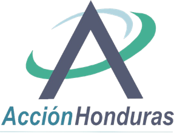
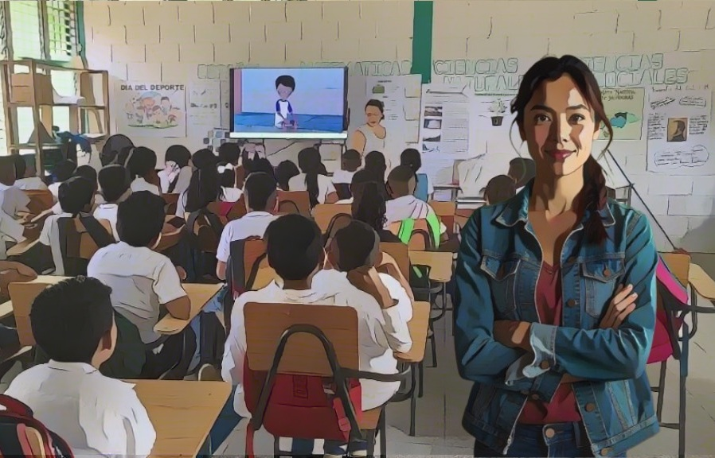
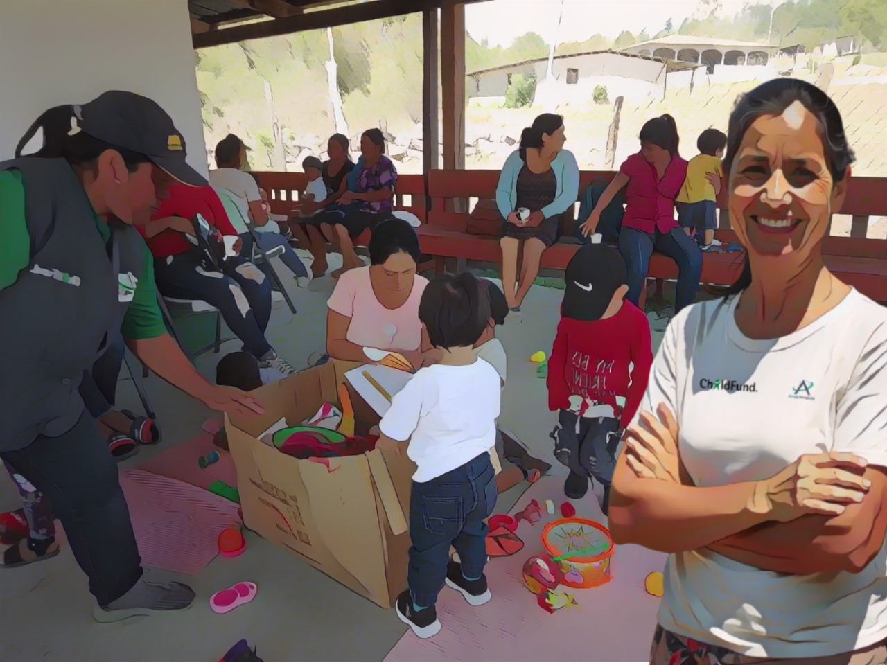
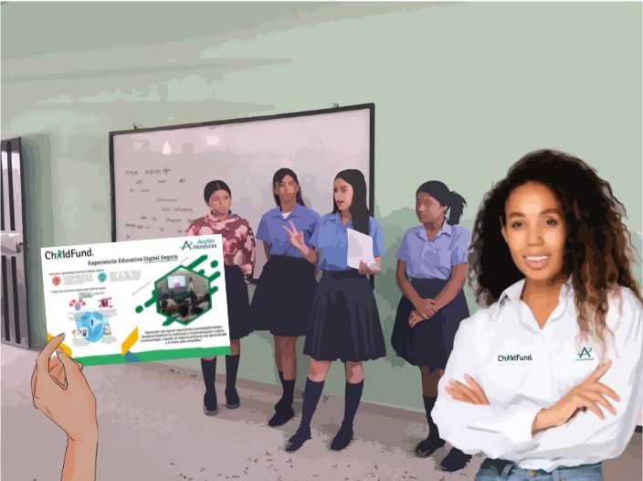

| DESARROLLO DE LA PRIMERA INFANCIA | |||
|---|---|---|---|
| Proyectos / Metodologías | Asocio | Recursos | Imagen |
|
• ChildFund • UNICEF • SENAF • SEDUC • SESAL • Orden de Malta • UNAH • P&G • ASER | 435 líderes, 43 locales ADN-DIT, 18 UAPS, 6 CIS, 120 centros preescolares, módulos Creciendo Contigo. |  |
| PROTECCIÓN | |||
|---|---|---|---|
| Proyectos / Metodologías | Asocio | Recursos | Imagen |
|
• ChildFund • SEDUC • Universidad de Sevilla • INE • SENAF • Fiscalía Especial de la Niñez • Alcaldías | 74 centros educativos, 94 docentes, módulos de Niñez Segura y Protegida, ruta de derivación, líneas de denuncia. |  |
| EDUCACIÓN / APRENDIZAJE | |||
|---|---|---|---|
| Proyectos / Metodologías | Asocio | Recursos | Imagen |
|
• ChildFund • GFC • FCA • RDS • Policía Nacional • SEDUC | 65 centros educativos, 292 docentes, 139 APF, 5 direcciones municipales de educación, módulos RRD. | |
| MEDIOS DE VIDA | ||
|---|---|---|
| Proyectos / Metodologías | Asocio | Recursos |
| Comunidades Resilientes | • PMA |
• 43 locales comunitarios • 86 voluntarias juveniles • Equipo y salones audiovisuales • Módulos de Empleabilidad y Plan de Vida |
| Capacitación y capital semilla para emprendimientos | • CONEANFO • CDE MiPyme – Golfo de Fonseca | |
| Formación ocupacional juvenil | • INFOP | |
| Emprendeton | • SEMPRENDE • ChildFund | |
| Cultura Emprendedora | • CDE MiPyme – Golfo de Fonseca | |
| REDUCCIÓN DE RIESGOS Y DESASTRES | ||
|---|---|---|
| Proyectos / Metodologías | Asocio | Recursos |
| Alimentos a familias vulnerables — Embarazadas y NN | • PMA • CODEM • Patronatos |
• Talento Humano calificado en áreas de emergencia • Medios de divulgación y comunicación • Protocolo de emergencia |
| Viveros, reforestación y limpieza de caminos | • PMA • CODEM • Patronatos | |
| Kit de Higiene y alimentación en emergencia – Cash Transfer | • ChildFund • Iglesia • Alcaldías | |
| Atención a familias vulnerables y en situación de emergencia | • IRC – Comité Internacional de Rescate | |
| Capacitación a ET sobre protección de niñez en situaciones de emergencia | • GOAL | |
| Desarrollo de plan de acción y preparación ante emergencias | • Red Humanitaria • CODEM | |
| DESARROLLO DE LA PRIMERA INFANCIA | |||
|---|---|---|---|
| Proyectos / Metodologías | Asocio | Recursos | |
| Integración de servicios de atención Primaria en Salud a NN – 6 años | • SEDUC • SESAL |
• Centros ADN • Centros de Salud • Promotores de Salud • Red de Voluntarias |
|
| Iniciativa Digital Segura para la Salud Preventiva de NN –6 años, madres y embarazadas. | • SESAL • Alcaldías • Patronatos |
||
| EDUCACIÓN / APRENDIZAJE | |||
|---|---|---|---|
| Proyectos / Metodologías | Asocio | Recursos | |
| Tutoría Solidaria | • Fundación TERRA • World Vision • SEDUC |
• Centros Educativos • APFs • Experiencias previas • Experiencia y conocimiento tecnológico |
|
| Emprendimiento Escolar con enfoque Educativo | • INFOP • CONEANFO • SEDUC | ||
| Acceso Digital a Educación para 3er ciclo, bachillerato y educación informal | • IHER • INFOP Virtual • Fundación Slim • SEDUC • CENET | ||